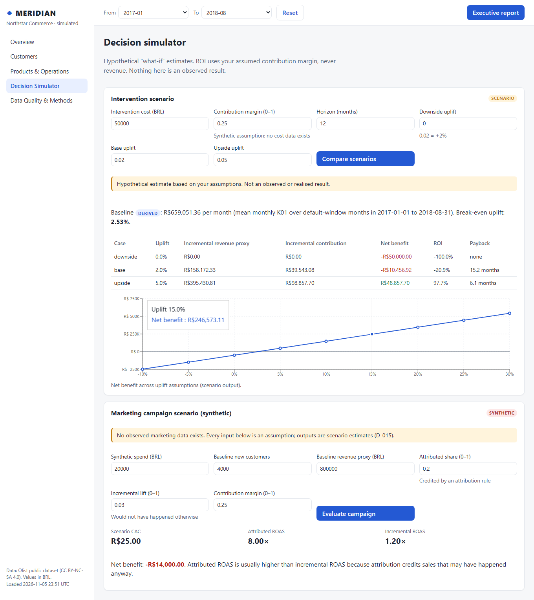
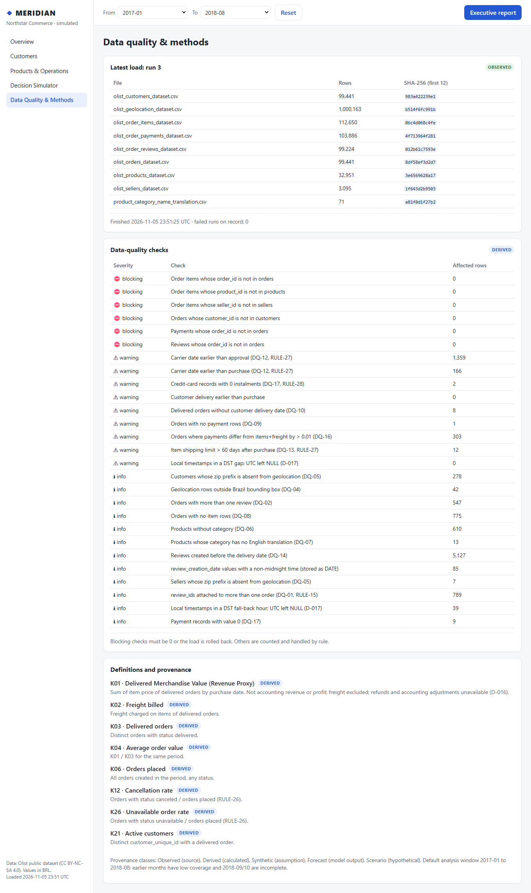

MERIDIAN
An analytics platform for a simulated retailer, built on 100k public orders.
- My role
- Requirements, KPI rules and acceptance
- Period
- 2026
- Status
- Complete, runs locally
The problem
Management needs one trusted view of sales and operations: what changed, how reliable the data is, and what a decision is worth.
My part
I set the requirements, KPI definitions and data rules, and approved each phase against its tests. Claude Code wrote the code.
How the data moves
- Olist CSV filesNine public files, kept out of Git
- Python ingestionHeader checks, checksums, one transaction
- MySQL 8Raw, staging, marts and KPI views
- Python analyticsKPIs recomputed, forecast, simulator
- FastAPI and ReactFive dashboard pages and a report
The architecture as built, from the repository README.
The dashboard

Decision simulator: scenarios run on stated assumptions.

Data quality: every load and check on record.
Checks that pass
- backend tests
- 112
- end‑to‑end tests
- 7
- load reconciliations matched
- 28
- KPI reconciliations matched
- 8
From the project status, 6 November 2026. CI runs on GitHub Actions.
Technology
Python 3.13, MySQL 8, Pandas, SQL, FastAPI, React with TypeScript, Recharts, Statsmodels, Matplotlib, Pytest, Ruff, Vitest, Playwright, GitHub Actions. Power BI as a model spec with DAX.
Limits and next steps
- Revenue is a proxy: delivered merchandise value, no costs or refunds.
- The forecast did not beat the naive baseline, so the baseline is used.
- Runs locally. Next: the Power BI report, then free hosting.
Enterprise FP&A on Anaplan
Next project